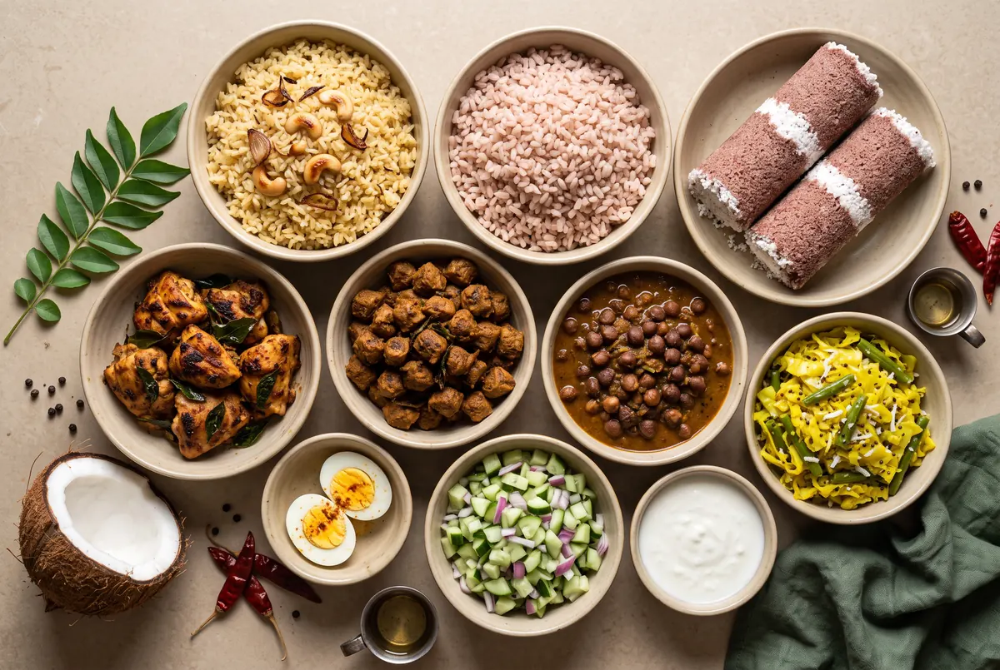

Six meal ideas. Reference recipe estimates. AI concept imagery. Make the combination your own.
FAMILIAR FLAVOURS. THOUGHT THROUGH.
It starts with our food. It comes together for you.
Start with a flavour you love. Get to know what goes into it. Make a little room for your day.

AI ingredient concept · Not a final recipe photographAI kitchen concept · Not a photograph of the teamAI meal concept · Does not depict exact gram weights
01
From flavour to a measured portion. From a portion to a place in your day.
01 / KEEP THE FAMILIAR
Biriyani person? Rice person? Puttu person?
That’s a good place to start. Jeerakasala rice, brown rice or ragi puttu: choose a familiar base, then explore what goes beside it.
Choose a tab to see what changes. One ingredient. One decision. A little more understanding.
ROZA / THE MEASURE STORY01 / 03
ONLY THE ADDED COCONUT OIL CHANGES
1050 g
10 gIllustrative starting amount
→
1050 g
10 gMeasured amount
ENERGY FROM THIS OIL89 kcal
−0 kcalfrom oil alone
ONLY THE COOKED BROWN RICE CHANGES
200g cooked rice
0 g
200 g
WHOLE-MEAL ESTIMATE565 kcal
−0 kcalby changing the rice
MORE CHICKEN + PROPORTIONAL MARINADE
100 gcooked chicken
Whole-meal protein39.7 g
Whole-meal energy504 kcal
+0.0 g protein+0 kcal
Reference estimates · AI food concepts↓
01 / MEASURE
A little less oil. A visible difference.
In this example, 10 g of added coconut oil becomes 5 g. That’s about 45 kcal less from oil alone.
↳Fat is needed. Amount and type matter.
Show me the calculation
Reference: 892 kcal per 100 g coconut oil. 10 g = 89.2 kcal; 5 g = 44.6 kcal. Difference: 44.6 kcal. Assumes all measured oil is retained and consumed in the serving, with other ingredients fixed. This is not a restaurant comparison or a tested before-and-after recipe.
02 / PORTION
Keep the rice. Get to know the portion.
Moving cooked brown rice from 200 g to 150 g changes this meal by about 62 kcal. Chicken, vegetables and curd keep their portions.
↳Carbs have a place. Your needs shape the portion.
What exactly changes?
Brown rice: 246 → 184.5 kcal. M2 whole meal: 565.4 → 503.9 kcal. Protein and fibre contributed by the rice also decrease slightly. This is not a personal portion prescription. The AI photo does not represent exact gram weights.
03 / BALANCE
More protein. See the whole picture.
Take this meal from 100 g to 150 g cooked chicken, with more marinade too. About 16 g more protein and 92 kcal more energy. Choose what fits your needs.
↳The aim isn’t always less. It’s a better fit for you.
See the whole-meal numbers
M2 model: protein 39.7 → 55.4 g; energy 503.9 → 596.2 kcal. Rice stays at 150 g, vegetables at 120 g and curd at 80 g. Extra marinade includes oil and yogurt. More protein is not a universal prescription.
Three independent examples, not changes to add together. Ingredient estimates—not validated product labels or promised health results. Food images are AI concepts.